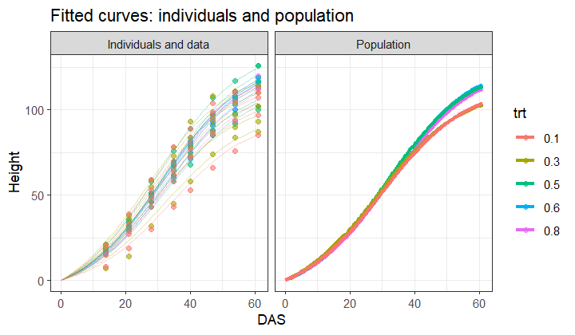

gcTMB fits non-linear growth curves over time by maximum likelihood with the Template Model Builder (TMB). The parameters of the curves can depend on covariates, have random effects for repeated measurements of the same individuals, and the residuals can be autocorrelated over time; the response can be continuous, a count or a proportion. Derived quantities such as the time to reach 90% of the asymptote or the maximum growth rate come with standard errors by automatic differentiation.
Features
- Growth models: general growth curves (logistic or Richards, Gompertz, Hill, Weibull, normal and gamma), each with an asymmetry parameter and optionally truncated at a threshold time before which the response is zero (e.g. emergence, or the first pods); the beta growth function of determinate growth, e.g. of crops; for forestry, the Chapman-Richards and Wykoff curves with an intercept, e.g. height-diameter models of trees from breast height; for human growth, the Preece-Baines model of growth in height through childhood and puberty; and a straight line for comparison. The x-axis need not be time.
-
Interpretable parameters: the asymptote (or the maximum growth rate,
b1type = "rate"), the time of the maximum growth rate or of half the asymptote, a scale, slope or shape, the threshold and the asymmetry; each with an identity, log, logit or inverse link, and any of them can be fixed. -
Distributions: gaussian, lognormal, poisson, binomial, beta-binomial, beta, and negative binomial (
nbinom1,nbinom2). -
Fixed and random effects: formulas for each parameter, e.g.
fform = b1 + b2 ~ treatmentandrform = b1 + b2 ~ 1 | plant, as innlme::nlme; random effects correlated across parameters, with several terms, nested or crossed grouping factors and random slopes, integrated out by the Laplace approximation. -
Autocorrelation: AR(1) and continuous-time AR(1) residuals within individuals,
correlation = corCAR1(form = ~ day | plant), with the correlation structures of nlme. - Inference: profile likelihood, Wald and parametric bootstrap confidence intervals; likelihood ratio tests with chi-square, F or parametric bootstrap p-values; information criteria; pairwise comparisons between curves with simultaneous confidence intervals; small-sample t and F inference for gaussian models without random effects.
-
Derived quantities: times to reach a percentage of the asymptote or a given response (
timeto()), and the maximum growth rate, its timing and the fraction of the asymptote reached then (maxrate()), with standard errors and confidence intervals. - Prediction and simulation: predictions of the curves and their parameters with confidence and prediction intervals, validation plots, and simulation from the fitted model at new times and for new individuals, e.g. for simulation studies.
Installation
gcTMB is installed from GitHub; it compiles its TMB model, so a C++ compiler is needed (Rtools on Windows).
pak::pak("EmilSkindersoe/gcTMB")Documentation
The website https://emilskindersoe.github.io/gcTMB/ has all the help pages and the vignettes as web pages.
The vignettes introduce the package with worked examples on faba bean data:
- Growth models and their parameters: the growth models, the meaning of their parameters, inflection points and maximum growth rates, model comparison, confidence intervals, and simple treatment effects.
- Fixed and random effects: covariates and random effects, and likelihood ratio and F-tests of their inclusion, for heights and counts.
-
Timing and maximum growth rates:
timeto()andmaxrate()with treatment and genotype effects, the maximum growth rate as a parameter, and pairwise comparisons, for normal and count data. - Autocorrelation and simulation: autocorrelated residuals within individuals, and simulation studies, including the recovery of the autocorrelation parameter.
The overview shows most of the features in one document. Each function has a help page, and ?gcTMB describes the models in detail.
Growth models
The main function is gcTMB(). The response is a curve f(t) of the explanatory variable t, usually time. The first curves below (logistic, Gompertz, Hill, Weibull, beta, normal and gamma) are sigmoid growth curves, often used in agronomy and ecology, e.g. for the growth of plants, crops and animals over a season. The Chapman-Richards and Wykoff curves are height-diameter models, common in forestry, with the diameter of the trees as t. The Preece-Baines curve is a model of human growth in height through childhood and puberty.
model |
f(t) | b2 | b3 | b4 |
|---|---|---|---|---|
"logistic" |
b1 / (1 + exp(-(t - b2)/b3)) | inflection point | scale | threshold |
"gompertz" |
b1 exp(-exp(-(t - b2)/b3)) | inflection point | scale | threshold |
"hill" |
b1 / (1 + (b2/t)^b3) | time of half the asymptote | slope on the log time axis | threshold |
"weibull" |
b1 (1 - exp(-(b3 - 1)/b3 (t/b2)^b3)) | inflection point | shape, > 1 | threshold |
"beta" |
b1 (1 + (b3 - t)/(b3 - b2)) ((t - b4)/(b3 - b4))^((b3 - b4)/(b3 - b2)), back to 0 at 2 b3 - b2 | inflection point | end of growth | start of growth |
"beta_capped" |
the same, staying at b1 from b3 on | inflection point | end of growth | start of growth |
"normal" |
b1 Phi((t - b2)/b3) | inflection point | scale | threshold |
"gamma" |
b1 Fgamma(t; b3, b2/(b3 - 1)) | inflection point | shape, > 1 | threshold |
"chapmanrichards" |
b4 + b1 (1 - exp(-t/b3))^exp(b2/b3) | inflection point | scale | intercept |
"wykoff" |
b4 + b1 exp(-2 (b2 + 1)/(t + 1)) | inflection point | not used | intercept |
"preecebaines" |
b1 - 2 (b1 - b3)/(exp(b4 (t - b2)) + exp(b5 (t - b2))) | middle of puberty | height at b2 | rate before puberty |
"linear" |
b1 t + b2 | intercept | not used | not used |
b1 is the asymptote approached at late times (the maximum, reached at the end of growth b3, for the beta curves; the adult height for Preece-Baines), and the slope of the linear model, which has no asymptote. Phi is the standard normal distribution function, and Fgamma(t; k, theta) the distribution function of the gamma distribution with shape k and scale theta. The Hill, Weibull and gamma curves are for positive times. The links of the parameters can be chosen, e.g. link = c(b1 = "log", b3 = "inverse"), with the identity (default), log, logit (b1) or inverse (b3 of the logistic and Gompertz models, the rate 1/b3) links.
By default, the logistic, Gompertz, Hill, Weibull, normal and gamma curves f(t) are truncated at a threshold time b4: shifted down to zero at b4 and rescaled to keep the asymptote b1, b1 (f(t) - f(b4))/(b1 - f(b4)) for t > b4, so that the response is zero up to b4. b4 is fixed at 0, so that the curve starts at zero at t = 0, unless estimated with fix = c(b4 = FALSE); truncated = FALSE gives the curves without truncation.
Each of these six models has an asymmetry parameter b5 > 0, fixed at 1 (the curves above) unless estimated with fix = c(b5 = FALSE): the logistic model becomes the Richards curve b1 / (1 + b5 exp(-(t - b2)/b3))^(1/b5), the Hill model b1 / (1 + (b2/t)b3)b5, the Weibull, normal and gamma models b1 (f(t)/b1)^b5, a power of the curve relative to its asymptote, and the Gompertz model b1 (1 - (1 - exp(-exp(-(t - b2)/b3)))^b5), a power of its survival function.
The other curves are never truncated, and only the general growth curves have an asymmetry b5.
-
Determinate growth: the beta growth function (Yin et al. 2003) grows from its start b4 to its maximum b1 at the end of growth b3.
"beta"continues the curve of Yin et al. beyond b3, back to zero at 2 b3 - b2, for responses that decline after their maximum;"beta_capped"stays at b1 from b3 on, the beta sigmoid growth function of Yin et al. -
Forestry: the Chapman-Richards and Wykoff curves are height-diameter models of trees (models M8 and M9 of Ciceu et al. 2020), with the diameter as t. Their intercept b4 is fixed at 0 unless given in
startor estimated withfix = c(b4 = FALSE), e.g. the breast height of 1.3 m,start = c(b4 = 1.3). The Chapman-Richards curve is the Richards curve with a negative asymmetry. -
Human growth: model 1 of Preece and Baines (1978) describes the growth in height through childhood and puberty, with the adult height b1, the age b2 in the middle of puberty, the height b3 at b2, and the rates b4 and b5 of growth before and during puberty, estimated by default.
maxrate()gives the peak height velocity of the pubertal growth spurt.
With b1type = "rate", b1 is the maximum growth rate of the curve instead of its asymptote, so that covariates and random effects on b1 act on the maximum growth rate.
Starting values come from a linearisation of the curve, e.g. log(y/(b1 - y)) = (t - b2)/b3 for the logistic curve, a straight line in t (or in log t for the Hill and Weibull curves) whose intercept and slope give b2 and b3, profiled over the asymptote b1, or from a grid search (gcTMBstart()).
Examples
A single curve
library(gcTMB)
set.seed(1)
d <- data.frame(day = rep(seq(0, 24, 2), each = 3))
d$weight <- 50 / (1 + exp(-(d$day - 10) / 2.5)) + rnorm(nrow(d), 0, 1.5)
fit <- gcTMB(weight ~ day, data = d, model = "logistic")
fit
#> Call:
#> gcTMB(form = weight ~ day, data = d, model = "logistic")
#>
#> Model: logistic, truncated at b4 = 0
#> Family: gaussian, identity link for all parameters
#>
#> Coefficients:
#> b1:(Intercept) b2:(Intercept) b3:(Intercept)
#> 50.099 9.770 2.647
#>
#> Residual standard deviation: 1.426timeto() gives the times at which the curve reaches a percentage of its asymptote, with standard errors from automatic differentiation and profile likelihood intervals by confint(), and maxrate() the maximum growth rate and its timing:
tt <- timeto(fit, level = c(10, 50, 90))
confint(tt)
#> 2.5 % 97.5 %
#> 10% 4.192012 4.902495
#> 50% 9.664311 10.137903
#> 90% 15.044105 16.338969
maxrate(fit)
#> Time of the maximum growth rate (tmax), maximum growth rate (rate) and proportion of total growth at inflection (fraction):
#>
#> Estimate Std.Error
#> tmax 9.770 0.1170
#> rate 4.850 0.1821
#> fraction 0.488 0.0022Treatment effects, random effects and autocorrelation
The data set FabaHeights25 has the heights of 25 faba bean plants under five treatments, measured on eight days after sowing. Treatment effects on the asymptote and the time of the maximum growth rate, correlated random effects of the plants on both, and continuous-time AR(1) residuals within the plants:
FabaHeights25$trt <- factor(FabaHeights25$Treatment)
fit1 <- gcTMB(height ~ DAS, fform = b1 + b2 ~ trt, rform = b1 + b2 ~ 1 | plant_ID,
data = FabaHeights25, correlation = corCAR1(form = ~ DAS | plant_ID))
summary(fit1)
#> Call:
#> gcTMB(form = height ~ DAS, fform = b1 + b2 ~ trt, rform = b1 +
#> b2 ~ 1 | plant_ID, data = FabaHeights25, correlation = corCAR1(form = ~DAS |
#> plant_ID))
#>
#> Model: logistic, truncated at b4 = 0
#> Family: gaussian, identity link for all parameters
#>
#> Number of observations: 200, groups: plant_ID 25
#> Log-likelihood: -480.8 (df = 16), AIC: 993.5, BIC: 1046
#>
#> Coefficients:
#> Estimate Std. Error
#> b1:(Intercept) 114.315 4.209
#> b1:trt0.3 -1.967 5.796
#> b1:trt0.5 12.109 5.843
#> b1:trt0.6 13.840 5.862
#> b1:trt0.8 11.427 5.863
#> b2:(Intercept) 30.099 1.157
#> b2:trt0.3 -1.480 1.609
#> b2:trt0.5 1.212 1.610
#> b2:trt0.6 1.884 1.616
#> b2:trt0.8 2.224 1.627
#> b3:(Intercept) 12.948 0.363
#>
#> Random effects:
#> Groups Name Std.Dev. Corr
#> plant_ID b1 8.256
#> b2 1.814 -0.54
#>
#> Residual standard deviation: 3.29
#>
#> Correlation structure: continuous-time AR(1) in DAS within plant_ID
#> rho: 0.9594
#>
#> Optimiser: relative convergence (4), maximum absolute gradient 0.00024Likelihood ratio tests of the treatment effects and of the autocorrelation:
fit0 <- update(fit1, fform = NULL)
fit2 <- update(fit1, correlation = NULL)
anova(fit0, fit1)
#> Likelihood ratio tests of gcTMB models
#>
#> npar AIC BIC logLik deviance LR Df Pr(>LR)
#> fit0 8 994.54 1020.9 -489.27 978.54
#> fit1 16 993.54 1046.3 -480.77 961.54 16.991 8 0.0302 *
#> ---
#> Signif. codes: 0 '***' 0.001 '**' 0.01 '*' 0.05 '.' 0.1 ' ' 1
anova(fit2, fit1)
#> Likelihood ratio tests of gcTMB models
#>
#> npar AIC BIC logLik deviance LR Df Pr(>LR)
#> fit2 15 1046.34 1095.8 -508.17 1016.34
#> fit1 16 993.54 1046.3 -480.77 961.54 54.799 1 1.335e-13 ***
#> ---
#> Signif. codes: 0 '***' 0.001 '**' 0.01 '*' 0.05 '.' 0.1 ' ' 1The curves of the plants and the population curves of the treatments:

The times to reach 90% of the asymptote for each treatment:
timeto(fit1, level = 90, newdata = data.frame(trt = levels(FabaHeights25$trt)), random = FALSE)
#> Times to reach the percentages of the asymptote:
#>
#> Estimate Std.Error
#> 90%:trt=0.1 59.9 1.36
#> 90%:trt=0.3 58.6 1.32
#> 90%:trt=0.5 61.0 1.37
#> 90%:trt=0.6 61.6 1.39
#> 90%:trt=0.8 61.9 1.40Counts
The data set FabaCounts23 has the numbers of pods of 22 plants of six genotypes. A Poisson model with an estimated threshold, the time of the first pods, and the maximum growth rate as the parameter b1, so that the genotypes are compared by their maximum growth rates:
genotypes <- data.frame(Genotype = sort(unique(FabaCounts23$Genotype)))
fitp <- gcTMB(pods ~ DAS, fform = b1 + b2 ~ Genotype, rform = b1 ~ 1 | Tube_ID, data = FabaCounts23,
family = "poisson", fix = c(b4 = FALSE), b1type = "rate", link = c(b1 = "log"))
pairwise(fitp, newdata = genotypes)
#> Pairwise differences of b1 (maximum growth rate) on the scale of its log link:
#>
#> Estimate Std.Error z value p.value lower
#> Genotype=Aurora - Genotype=Capri 0.3002 0.232 1.296 0.78767 -0.360
#> Genotype=Aurora - Genotype=ILB938 0.4572 0.231 1.976 0.35585 -0.202
#> Genotype=Aurora - Genotype=Lynx -0.2753 0.231 -1.192 0.84195 -0.933
#> Genotype=Aurora - Genotype=Melodie -0.5368 0.245 -2.191 0.24139 -1.235
#> Genotype=Aurora - Genotype=Navara -0.1767 0.232 -0.762 0.97484 -0.838
#> Genotype=Capri - Genotype=ILB938 0.1570 0.218 0.722 0.98021 -0.463
#> Genotype=Capri - Genotype=Lynx -0.5755 0.217 -2.650 0.08513 -1.194
#> Genotype=Capri - Genotype=Melodie -0.8370 0.232 -3.610 0.00444 -1.498
#> Genotype=Capri - Genotype=Navara -0.4769 0.218 -2.186 0.24384 -1.099
#> Genotype=ILB938 - Genotype=Lynx -0.7324 0.217 -3.376 0.00970 -1.351
#> Genotype=ILB938 - Genotype=Melodie -0.9940 0.232 -4.288 0.00032 -1.655
#> Genotype=ILB938 - Genotype=Navara -0.6339 0.218 -2.907 0.04185 -1.255
#> Genotype=Lynx - Genotype=Melodie -0.2616 0.231 -1.130 0.87005 -0.921
#> Genotype=Lynx - Genotype=Navara 0.0985 0.218 0.453 0.99757 -0.521
#> Genotype=Melodie - Genotype=Navara 0.3601 0.232 1.549 0.63191 -0.302
#> upper ratio ratio.lower ratio.upper
#> Genotype=Aurora - Genotype=Capri 0.9600 1.350 0.698 2.612
#> Genotype=Aurora - Genotype=ILB938 1.1164 1.580 0.817 3.054
#> Genotype=Aurora - Genotype=Lynx 0.3828 0.759 0.393 1.466
#> Genotype=Aurora - Genotype=Melodie 0.1613 0.585 0.291 1.175
#> Genotype=Aurora - Genotype=Navara 0.4841 0.838 0.433 1.623
#> Genotype=Capri - Genotype=ILB938 0.7769 1.170 0.629 2.175
#> Genotype=Capri - Genotype=Lynx 0.0434 0.562 0.303 1.044
#> Genotype=Capri - Genotype=Melodie -0.1763 0.433 0.224 0.838
#> Genotype=Capri - Genotype=Navara 0.1448 0.621 0.333 1.156
#> Genotype=ILB938 - Genotype=Lynx -0.1142 0.481 0.259 0.892
#> Genotype=ILB938 - Genotype=Melodie -0.3335 0.370 0.191 0.716
#> Genotype=ILB938 - Genotype=Navara -0.0127 0.531 0.285 0.987
#> Genotype=Lynx - Genotype=Melodie 0.3978 0.770 0.398 1.489
#> Genotype=Lynx - Genotype=Navara 0.7185 1.104 0.594 2.051
#> Genotype=Melodie - Genotype=Navara 1.0223 1.433 0.739 2.780
#>
#> Wald z tests; p-values and confidence limits adjusted by the single-step (Tukey) method, 95% confidence limits, and ratios.Functions and methods
| Purpose | Functions |
|---|---|
| Fitting |
gcTMB(), gcTMBstart(), gcTMBcontrol(), corAR1(), corCAR1(), update()
|
| Results |
summary(), coef(), vcov(), logLik(), converged(), fixef(), ranef(), VarCorr(), sigma(), corpars()
|
| Confidence intervals |
confint(), profile(), bootstrap()
|
| Tests and model choice |
anova(), criteria(), pairwise()
|
| Derived quantities |
timeto(), maxrate()
|
| Prediction and diagnostics |
predict(), fitted(), residuals(), plot()
|
| Simulation |
simulate(), update()
|
The extractors fixef(), ranef() and VarCorr() work for gcTMB, nlme and lme4 fits alike, and the formulas of the effects and the correlation structures follow nlme; gcTMB fits by maximum likelihood, so its likelihoods compare with nlme fits with method = "ML". See ?gcTMB, Relation to nlme.
Acknowledgements
gcTMB started as a fork of drcTMB by Daniel Gerhard, which fits dose-response curves with the Template Model Builder. It has since been developed into a standalone package for growth curves, but builds on the ideas and code of drcTMB.